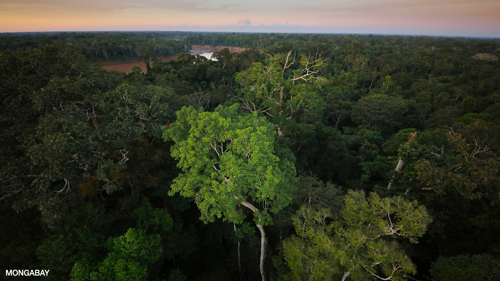
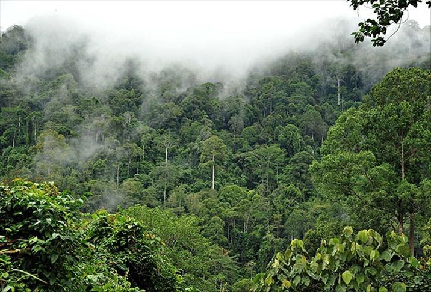
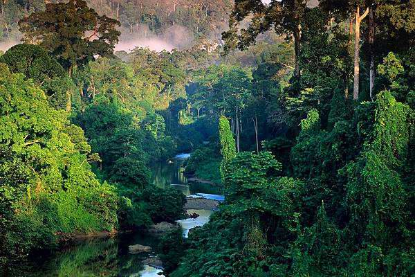

Why are trees important?
Trees are one of the most vital lifeforms on our planet. They allow for thriving and diverse eco-systems to emerge. While rainforests only account for 2% of the Earth's surface, they contain 50% of species on Earth. Through proper land management forests can be brought back to life. Here are some factors to consider when doing so.
Where should be plant our trees?
Planting tress in the center of an already existing forest is the best use of tree planting efforts. But not just any tree can be planted. There has to be a wide diversity of trees that are native to the region. This will ensure that the trees will be able to handle whatever local environmental conditions there are throughout the year.
A corridor can revive an entire forest system by opening up pathways for the hunting
migratory cycle.
When a forest gets cut in half,
like with a wall or a road, this can interrupt the forest ecology tremendously.
Apex predators, like wolves, may rely on a certain migration pattern of hunting spots.
If a road cuts through this hunting pattern, the entire food supply is cut in half.
This leads to the pack of wolves being unable to sustain enough numbers to effectively hunt.
Overpopulation of deer then result in tree saplings being eaten before being able to
become a tree. The grass grows tall enough that it restricts sunlight from reaching the
bottom of the forest floor, which leads to the death of the forest and conversion
to a grassland.
Which forests should we target?
-

Amazon Rainforest
The largest rainforest on Earth and home to half of all species on Earth.
-

Atlantic Rainforest
The Amazon's neighbor in Brazil, this forest has been devastated as population growth has wiped out most of the forest on Brazil's Atlantic Coast.
-

Southeast Asian Rainforest
Previously the largest contiguous forest on Earth, this forest has been destroyed by human growth and activity. Most of the forest is now seperated into patches, and building corridors in this area would help greatly.